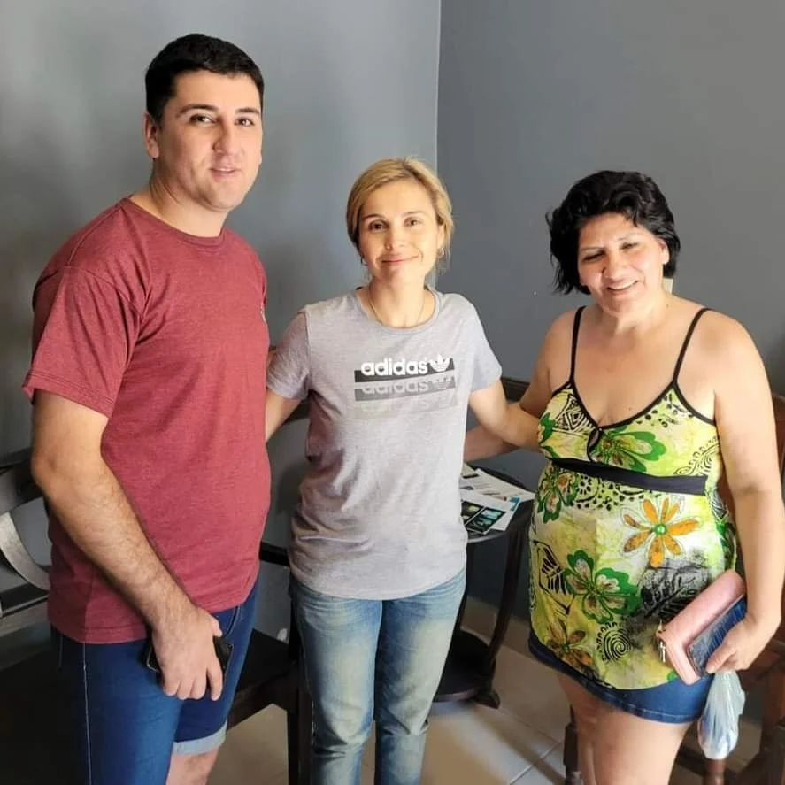
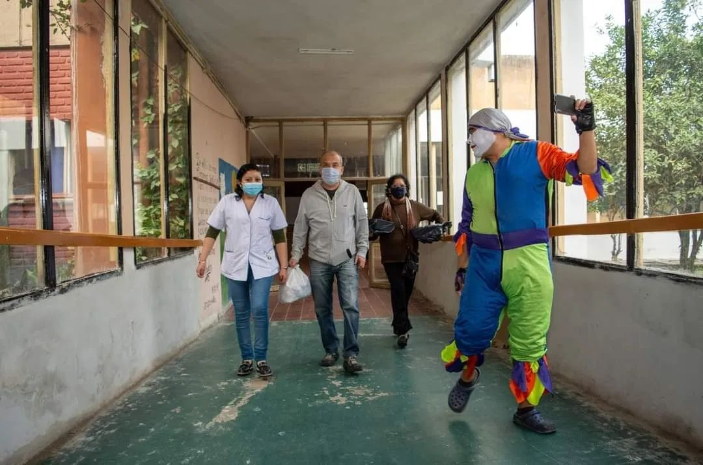
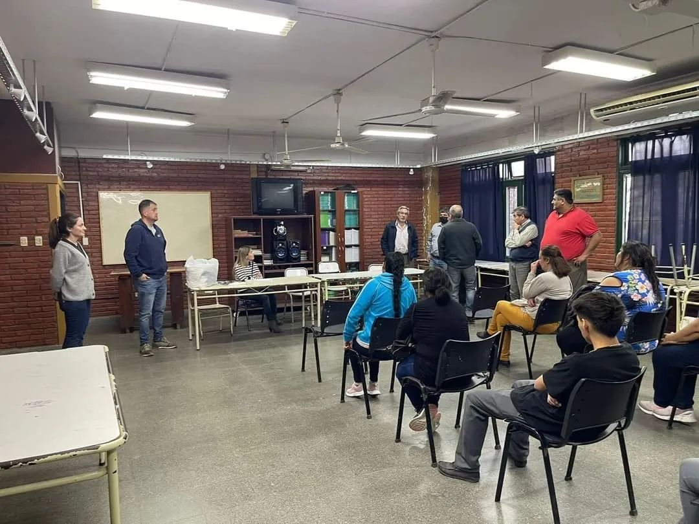

Colaboramos con nuestros niños y jóvenes de nuestra ciudad con el llenado de las fichas médicas
escolares.
Siempre con la mejor predisposición del Dr. Claudio Diaz Pratz y el equipo de trabajo que esta
siempre맗resente.
Hoy estuve con Juan quien me había contado que es arquero en Los Leones, un equipo de fútbol de
amputados que viene participando en Torneos de Discapacidad.
A Juan no lo detiene nada y esa pasión es la que hace que las personas cumplan metas y se superen.
En consonancia con nuestro apoyo al deporte y para ayudarlo a seguir en sus prácticas, hoy le
entregamos una camiseta de arquero (roja como la del Dibu,맊omo먞뼓맘uería)
Nueva visita al hogar San Alberto
Está mañana visitamos nuevamente el Hogar San Alberto llevando un poco de fiesta y entusiasmo a los
abuelos.
El Carnaval estuvo presente con nuestras amigas Cami y Agus y al ritmo de batucada y cumbia con
teclado de Cristian Lazarte y su Banda bailamos y reímos con el payaso Azuquita festejando además el
cumple de Luís, Pedro, 2 Juanes y Gladys.
Hermoso compartir con ellos, la intención era llevarles alegría pero volvemos con el pecho
hinchado맋e마mor.
Fichas médicas de niños y jóvenes
Colaboramos con nuestros niños y jóvenes de nuestra ciudad con el llenado de las fichas médicas
escolares.
Siempre con la mejor predisposición del Dr. Claudio Diaz Pratz y el equipo de trabajo que esta
siempre맗resente.
Colaboramos con joven estudiante de Ingeniería Electrónica
Sergio es un joven taficeño estudiante de 2do año de Ingeniería Electrónica, también egresado de la
Escuela Técnica Rafael Marino.
Es además un amante de la robótica y en su taller de trabajo no solo realiza producciones
comerciales por encargo sino que además ha aplicado en ocasiones sus conocimientos y creatividad
para ayudar a personas con problemas físicos o motrices a superar limitaciones.
Con ingenio es capaz de aplicar la robótica a la ortopedia para mejorar la movilidad y
terminación de partes del cuerpo.
Me invito a su taller a conocer un poco cómo funciona y descubrí un gran costado de la
tecnología puesta al servicio del ser humano.
Colaboramos con Sergio para reposición de materiales viendo un gran futuro en este joven y en el
potencial de su trabajo para mejorar la vida de mucha gente.
Ya está planeando reproducir material de trabajo reciclando맗lástico.

Colaboración para la comparsa Sangre Azul
Desde nuestro espacio colaboramos con el traslado al Chañar para la comparsa taficeña Sangre Azul,
grupo de artistas taficeños que vienen distinguiéndose con múltiples premios
en los corsos realizados en los distintos puntos de맓a맗rovincia.
Brindando remeras para nuestros jovenes
Asistimos a los jóvenes de nuestra ciudad, barrio de lomas de tafi, brindandoles las remeras
realizadas por nuestra agrupación.
Asistimos a los jóvenes de nuestra ciudad, barrio de lomas de tafi, brindandoles las remeras
realizadas por nuestra agrupación.
Estamos contentos de poder fomentar el deporte, porque el deporte es salud, es contención
Seguimos atentos a las necesidades de nuestros vecinos/jovenes.
Compartimos un momento bonito junto a los niños de barrio calpini.
Les invitamos a estos niños con una salida al bar Mala Vida para cerrar su periodo de vacaciones con
unas exquisitas맏amburguesas.
Los reyes de la agrupación
Los reyes magos de la agrupación Diaz Prats León se hicieron presente para alegrar a los niños
de nuestra ciudad.
La agrupación Diaz Prats Leon estuvo realizando trabajos de poda
Apesar del calor nuestra agrupación sigue trabajando con los pedidos. 🙌
Queremos cumplirles a todos y seguimos trabajando para la comunidad.
Gracias al equipo de poda que a
pesar de las circunstancias climáticas
siguen trabajando.
Trabajo terminado para la familia Villalba

Visitamos a los Abuelos del San Alberto
Pasamos una hermosa tarde con los abuelos del San Alberto a quienes agasajamos en su día, compartimos
la merienda, charlamos, los hicimos bailar, cantar, y hasta un abuelo y una abuela recitaron un haro
haro y realmente nos hicieron reír.
Entre chacareras y sarandeos, trencitos y las ocurrencias de Azuquita el payaso, cada uno
recibió un
presente de nuestra agrupación hecho con mucho cariño especialmente para ellos.
Una experiencia enriquecedora, y la promesa pendiente de volver a un nuevo encuentro

Celebrando Juntos a Nuestros Egresados
Esta tarde visitamos a la Esc. Técnica Rafael Marino de nuestra ciudad, recibidos por su Director
Carlos
Nuñez, con quien dialogamos sobre los cambios y avances que ha tenido la institución y la importante
preparación que aporta a sus alumnos.
El motivo de la visita fue hacer la entrega de 18 remeras para los egresados, lo que pudimos
concretar con mucho esfuerzo.
Esta es una de las formas de identificarse y reconocer el logro de culminar con esta etapa de su
trayectoria escolar y ellos se lo merecen.
Por eso hemos colaborado con este gesto significativo, premiando su esfuerzo y apostando a la
educación.